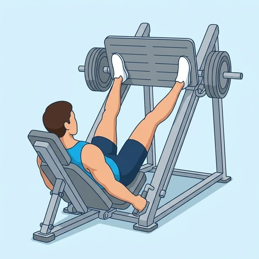
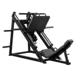

Wide-Stance Leg Press
A leg press with a wide, slightly turned-out stance that increases the contribution of the adductors alongside hip and knee extension while the back stays supported.
Upper legs · Leg Press · Beginner


Muscles worked by the Wide-Stance Leg Press
Primary
Secondary
Also called: hip adductors, inner thigh, adductor muscles, groin.
Equipment

Leg PressAlso called: leg press machine, 45 degree leg press, horizontal leg press, plate-loaded leg press, sled leg press.
How to do the Wide-Stance Leg Press
- Set the back pad and seat so your lower back remains supported at the bottom of the repetition.
- Place your feet wide on the platform with the toes turned out only as far as the knees can follow comfortably.
- Lower the sled by bending the hips and knees while keeping the knees aligned with the toes and the feet flat.
- Press through the whole foot and extend the hips and knees without forcing the knees into lockout.
- Lower the sled under control and repeat for the desired number of repetitions.
Form tips
- Use a width and toe angle that your hips can control; wider is not automatically better.
- Keep the knees moving in the same direction as the toes rather than letting them collapse inward.
- Stop the descent before the pelvis rolls under and the lower back loses contact with the pad.
At a glance
| Body part | Upper legs |
|---|---|
| Category | Strength |
| Force type | Push |
| Mechanic | Compound |
| Difficulty | Beginner |
| Equipment | Leg Press |
| Goals | Hypertrophy, Strength |
| Tags | Leg day, Lower back safe, Shoulder safe, No axial load, Knee safe |
| MET | 6.0 (metabolic equivalent, for calorie estimates) |
| Unilateral | No |
| Bodyweight | No |
| Dataset id | wide-stance-leg-press |
Wide-Stance Leg Press in German & Spanish
| German | Beinpresse mit weitem Stand |
|---|---|
| Spanish | Prensa de piernas con postura amplia |
Descriptions, instructions and tips ship in all three languages in the JSON.
Related exercises
Exercise data (JSON)
The record below is exactly what exercises.json ships for this exercise — names, descriptions, instructions and tips in English, German and Spanish.
{
"id": "wide-stance-leg-press",
"name_en": "Wide-Stance Leg Press",
"name_de": "Beinpresse mit weitem Stand",
"name_es": "Prensa de piernas con postura amplia",
"description_en": "A leg press with a wide, slightly turned-out stance that increases the contribution of the adductors alongside hip and knee extension while the back stays supported.",
"description_de": "Eine Beinpresse mit weitem, leicht nach außen gedrehtem Stand, die neben der Hüft- und Kniestreckung stärker die Adduktoren einbezieht.",
"description_es": "Una prensa de piernas con una postura amplia y ligeramente abierta, que aumenta la participación de los aductores junto con la extensión de cadera y rodilla.",
"category": "strength",
"force_type": "push",
"mechanic": "compound",
"difficulty": "beginner",
"equipment": "leg_press",
"body_part": "upper_legs",
"primary_muscles": [
"adductors"
],
"secondary_muscles": [
"gluteus_maximus",
"hamstrings",
"quadriceps"
],
"goals": [
"hypertrophy",
"strength"
],
"tags": [
"leg_day",
"lower_back_safe",
"shoulder_safe",
"no_axial_load",
"knee_safe"
],
"variation_group": "leg-press",
"is_unilateral": false,
"is_bodyweight": false,
"instructions_en": [
"Set the back pad and seat so your lower back remains supported at the bottom of the repetition.",
"Place your feet wide on the platform with the toes turned out only as far as the knees can follow comfortably.",
"Lower the sled by bending the hips and knees while keeping the knees aligned with the toes and the feet flat.",
"Press through the whole foot and extend the hips and knees without forcing the knees into lockout.",
"Lower the sled under control and repeat for the desired number of repetitions."
],
"instructions_de": [
"Stell Rückenpolster und Sitz so ein, dass der untere Rücken am unteren Punkt gestützt bleibt.",
"Setze die Füße weit auf die Plattform und drehe die Zehen nur so weit nach außen, wie die Knie folgen können.",
"Senke den Schlitten durch Beugen von Hüfte und Knien ab und halte Knie und Zehen in derselben Richtung.",
"Drücke mit dem ganzen Fuß und strecke Hüfte und Knie, ohne die Knie gewaltsam zu verriegeln.",
"Senke den Schlitten kontrolliert ab und wiederhole die Bewegung."
],
"instructions_es": [
"Ajusta el asiento y el respaldo para que la zona lumbar permanezca apoyada en la parte baja del recorrido.",
"Coloca los pies separados en la plataforma y gira las puntas hacia fuera solo hasta donde las rodillas puedan seguirlas.",
"Baja el carro flexionando caderas y rodillas y mantén las rodillas en la misma dirección que los pies.",
"Empuja con todo el pie y extiende caderas y rodillas sin forzar el bloqueo.",
"Baja el carro bajo control y repite el número deseado de repeticiones."
],
"tips_en": [
"Use a width and toe angle that your hips can control; wider is not automatically better.",
"Keep the knees moving in the same direction as the toes rather than letting them collapse inward.",
"Stop the descent before the pelvis rolls under and the lower back loses contact with the pad."
],
"tips_de": [
"Wähle eine Breite und Zehenstellung, die du aus der Hüfte kontrollieren kannst.",
"Lass die Knie in Richtung der Zehen laufen und nicht nach innen kollabieren.",
"Stoppe vor dem Punkt, an dem sich das Becken einrollt und der Rücken den Kontakt zum Polster verliert."
],
"tips_es": [
"Elige una anchura y un ángulo de los pies que puedas controlar desde la cadera; más ancho no siempre es mejor.",
"Mantén las rodillas siguiendo a los pies y evita que se hundan hacia dentro.",
"Detén el descenso antes de que la pelvis se despegue y la espalda pierda contacto con el respaldo."
],
"met": 6.0,
"images": {
"flat": {
"start": "images/flat/wide-stance-leg-press-start.webp",
"peak": "images/flat/wide-stance-leg-press-peak.webp"
}
}
}Fetch just this exercise
const { exercises } = await fetch(
"https://exercise-dataset.com/exercises.json"
).then(r => r.json());
const ex = exercises.find(e => e.id === "wide-stance-leg-press");Free for personal and commercial in-app use with attribution (“Exercise data by RepDB”) — see the license and ready-made attribution snippets. Redistributing the data as a dataset or API is not permitted.